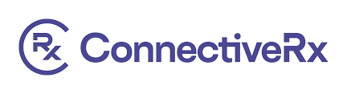
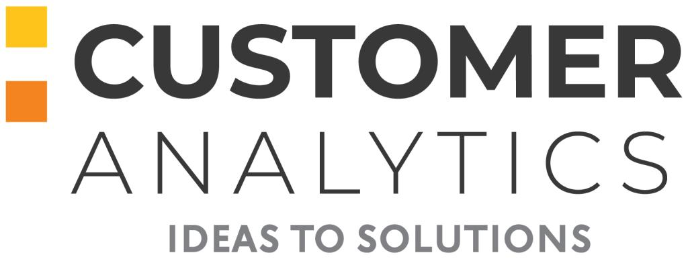
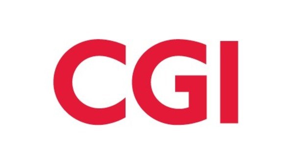

Professional Experience
Technical Consultant - ConnectiveRx
Technical Product Leadership: Bridged engineering and product strategy by leading hands-on technical implementation across ETL workflows, security vulnerability remediation, Angular migration, and AWS Step Functions while driving product decisions that reduced processing time by 40% and enhanced user experience.
- Technical Implementation & Strategy
- Product-Driven Engineering
- ETL & Data Architecture
- Security & Compliance
- AWS Cloud Solutions
Lead Developer - Ashley OMS Modernization
Product Transformation: Spearheaded modernization of enterprise Order Management System. Defined product vision, managed 125+ user stories, and delivered a scalable solution improving efficiency by 25%. Drove cross-functional alignment and introduced real-time performance metrics for continuous optimization.
- Product Vision & Strategy
- Cross-functional Leadership
- Requirements Engineering
- System Modernization
- Performance Optimization
- DevOps Integration
Founding Developer - Agilysys Engage - Loyalty & Promotions Platform
0-to-1 Product Development: Built enterprise loyalty platform from concept to market launch. Orchestrated stakeholder alignment across 30+ customers, delivered a go-to-market strategy, and drove 40% revenue growth in the first year. Led cross-functional development from prototype to production, ensuring scalability and seamless customer adoption. Enhanced user engagement through data-driven feature optimization.
- 0-to-1 Product Development
- Market Research & Analysis
- Go-to-Market Strategy
- Customer Discovery
- Revenue Growth
- Product-Market Fit
Software Developer - CGI
Enterprise Development: Developed and maintained large-scale enterprise applications using .NET technologies. Collaborated with cross-functional teams to deliver robust software solutions, implemented best practices for code quality, and contributed to system architecture decisions that improved application performance and scalability.
- .NET Development
- Enterprise Applications
- System Architecture
- Code Quality & Best Practices
- Cross-functional Collaboration
- Performance Optimization
Core Competencies
Product Management
- Product Strategy & Roadmapping
- Stakeholder Management
- Agile & Scrum Methodologies
- Requirements Engineering
- Go-to-Market Strategy
- User Experience Design
Technical Skills
- Python, .NET Core, SQL
- AWS, Azure, Snowflake
- ETL Workflows & Data Pipelines
- Angular, JavaScript
- DevOps & CI/CD
- System Architecture
Analytics & Tools
- Tableau, Power BI
- Talend, Jenkins
- Business Intelligence
- Data Analysis & Modeling
- Performance Optimization
- Security & Compliance
Companies I've Worked With



About Me
Aspiring Technical Product Manager with 7+ years of experience leading cross-functional teams and delivering innovative, data-driven solutions across healthcare, retail, and technology domains. Expertise in stakeholder management, agile methodologies, and end-to-end product development lifecycles. Proven track record in modernizing enterprise systems, optimizing workflows, and driving revenue increase through strategic product initiatives. Skilled in building cloud-native applications and data pipelines using AWS, Azure, and Snowflake. Strong technical foundation in Python, .NET Core, and SQL, complemented by hands-on experience in DevOps, BI, and analytics tools like Tableau, Talend, and Jenkins. MS in Business Analytics from the University at Buffalo, combining analytical rigor with product strategy to translate complex data insights into impactful business outcomes. Passionate about leveraging technology, agile execution, and user feedback to create scalable products that drive measurable value.
My Resume